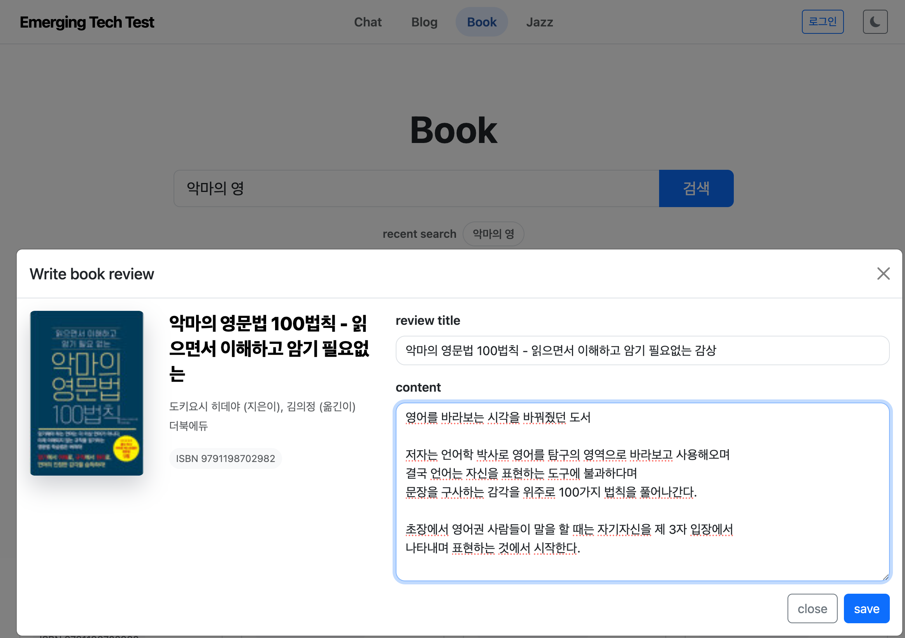
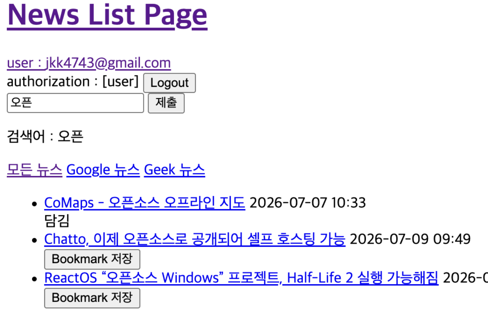

유기준
BACKEND DEVELOPER
컴퓨터공학을 전공했으며 백엔드 개발자를 목표로 하고 있습니다. 사용자 요구를 데이터 모델과 기능으로 만드는 과정을 좋아하고, Django와 Spring으로 웹 서비스 개발을 하고 있습니다. 인증, 외부 API, 실시간 통신과 비동기 작업을 만들며 오류를 재현하고 처리 흐름을 따라가는 디버깅을 좋아합니다. 동작 원리를 이해하고 꾸준히 발전하는 개발자가 되겠습니다.
Profile
기술과 약력
Skills
- Backend
- Java, Spring Boot, Python, Django
- Data
- SQL, Spring Data JPA, Django ORM, H2, SQLite, Redis
- Integration
- REST API, WebSocket, Celery
- Tools
- Git, GitHub, Gradle
Specs
- Education
-
- 경성대 컴퓨터공학과 졸업예정21.03 ~ 27.03
- Certificate
-
- 정보처리기사2026.06
- 정보기기운용기능사2023.06
- 1종 보통 운전면허2021.08
- 지게차운전기능사2023.11
- Language
-
- TOEIC 815점2024.11
- Award
-
- 부산경제진흥원 해커톤 2등 총장상2026.07
Project 01
Bookshelf
Django 기반 콘텐츠·도서 커뮤니티 웹 서비스
Overview
도서 검색과 콘텐츠 작성을 중심으로 사용자 간 정보를 공유하고, 실시간 채팅과 음원 변환 기능을 이용할 수 있도록 구현했습니다.
Tech Stack
Python · Django · SQLite · Django ORM · Channels · WebSocket · Celery · Redis · CKEditor · 알라딘 Open API

Key Implementation
- 커스텀 사용자 모델과 로그인 권한 제어를 적용하고 게시글·댓글 CRUD 구현
- 태그와 게시글을 1:N 관계로 설계하고 태그별 게시글 조회 기능 구현
- 알라딘 Open API 응답을 서비스 계층에서 정규화하고
ISBN 및 제목·저자 기준 중복 처리 - Channels와 WebSocket으로 채팅방 단위 메시지 브로드캐스트 및
메시지 DB 저장 - Celery·Redis 작업 큐로 음원 변환을 웹 요청에서 분리하고
작업 상태 실시간 조회 기능 구현
What I Learned
외부 API 데이터를 내부 모델로 변환하는 과정과 실시간 연결, 오래 걸리는 작업을 서버 내부에서 분할해 병렬제어하는 것이 효율적임을 알았습니다.
Project 02
RSS 뉴스 아카이브
Spring Boot 기반 RSS 뉴스 수집·검색 서비스
Overview
Google News와 GeekNews의 RSS 피드를 주기적으로 수집하고, 검색엔진을 추가하여 키워드 검색이 가능하고, 개인 북마크 기능을 제공하는 서비스입니다.

Key Implementation
- Spring Scheduler와 수동 요청이 동일한 RSS 수집 로직을
사용하도록 구성 - Spring Security를 적용해 회원가입·로그인 및 사용자별 북마크 설정
- 한글 부분 검색을 위한 2-gram 토큰화와 문서별 단어 빈도를
저장하는 역색인 추가 - 단어 희귀도와 문서 길이를 반영하는 BM25 점수로 검색 결과를 정렬
- 애플리케이션 시작 시 기존 뉴스를 재색인하고 새 뉴스 저장 직후 색인을 갱신
Search Flow
검색어 정규화 → 2-gram 토큰화 → 역색인 조회 → BM25 점수 합산
→
관련도순 정렬
Closing
배운 점과 앞으로의 방향
How I Work
- 구현 전에 요구사항과 화면 흐름을 먼저 정리하고, 필요한 기능을 작은 단위로 나누어 확인하겠습니다.
- 막히는 부분은 혼자 오래 붙잡기보다 현재 상황과 시도한 내용을 정리해
동료와 소통하겠습니다. - 팀원의 의견을 존중하며, 피드백을 바탕으로 더 나은 구현 방향을 함께
찾아가며 진행하겠습니다.
Next Challenge
Contact
- Phone
- 010 - 7552 - 4741
- jkk4741@naver.com
- GitHub
- https://github.com/dbrlwns